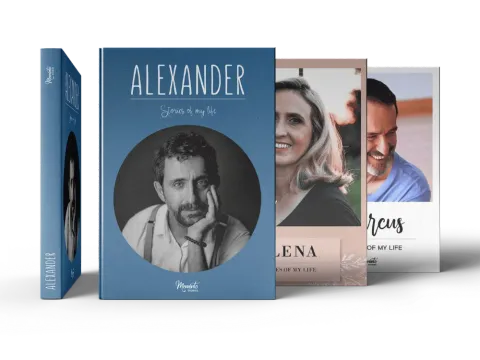

每个故事都有合适的书
找到一本，
真正适合你们的记忆书。
无论是父母的一生、孩子最初的岁月、一次婚礼、一段旅程，还是对重要之人的纪念，都可以从一个温柔的问题开始。

全部书型
你想保存的，是哪一段故事？
每一种书都有专属问题和内容路径，同时共享语音转文字、音视频二维码、家人协作与精装印刷能力。
还不知道选哪一本？
先从想留下的人开始。
为父母或祖父母保存一生，选择“人生故事书”；记录一家人的今年，选择“家庭年鉴”；想完全自由创作，选择“自由创作书”。
从人生故事书开始一本书，从一个答案开始